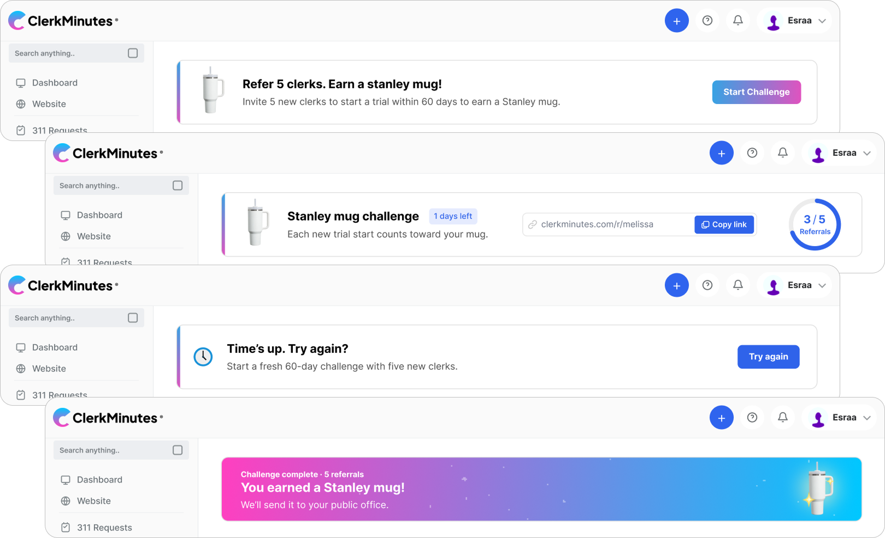

ClerkMinutes Referral Experience
I designed this referral experience for ClerkMinutes as a compact product flow that could live directly inside the dashboard without interrupting a clerk’s normal work. The challenge was supporting two different incentive models in one clear system: annual users worked toward a Stanley mug through five successful paid referrals within a 60-day window, while monthly users earned free months through an ongoing referral track.
The UX had to make progress, trial-to-paid conversion, rewards, timing and completion states understandable at a glance. I mapped the full flow, then designed the dashboard widget and modal states for invitation, active progress, wins, expired periods and reward history, refining the experience to stay useful without taking over the product.
